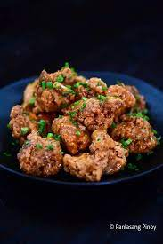
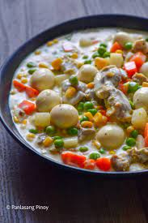

Menu
Mini Donut
- 2- 500g maya pancake mix
- 4- large egg i-whisk after
- 3/4 cup water (1/4 + 1/2 cup = 3/4 cup
- ulitin ng apat na beses ang paglagay ng 3/4 cup of water
- mix wet ingredients
- add 500g MAYA PANCAKE MIX
- mix then wag i over mix
- transfer sa squeezed bottle
- add oil sa donut maker (once lang then pag mahirap na tanggalin yung donut add lang ulit)
- wait for 1 minute and 14 seconds
- kapag mataba na i flip lang and wait for another 20-30 seconds para maluto na yung mini donuts (depende minsan mabilis minsan matagal mag brown)
- Add your favorite toppings you like to satisfy your cravings.

Glazed Fried Chicken
- 1/2 kg chicken wings
- 1 1/2 tbsp of magic sarap
- black pepper
- add 1 cup of all purpose flour
- 1/2 cup of cornstarch
- 1st fry: 8 mins (medium heat)
- 2nd fry: 4-6 mins (medium high heat)
- half an onion
- 3 clove of garlic
- 1/2 tsp ginger
- 1 tsp chili
- saute for 2 mins
- add the fried chicken
- add 2/3 cups of water
- 2 tbsp of brown sugar
- 1/4 cup of oyster sauce
- haloin lang hangang malagyan na ng sauce ang chicken.

Sipo Egg
- boil water first, and add 10-12 pcs quail eggs cook for 5-6 mins (medium-high heat)
- 1 medium singkamas (diced)
- 250g of ham or luncheon meat (diced)
- mix 68g of cream of mushroom in 410ml evaporated milk
- add 1 medium onion
- add 5 cloves of garlic and saute for a few seconds
- add ham and cooked for 3-4 mins
- add sliced singkamas and stir for 1-2 mins
- add 500g of mixed veggies stir for 1-2 mins
- add 1 teaspoon of salt and pepper
- add cream of mushroom and evaporated milk mixture stir well
- add 250ml all purpose cream stir for 3-4 mins
- boil for another 2-3 mins (low-medium heat)
- add boiled quail egg